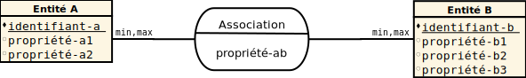
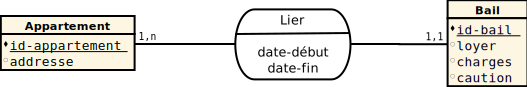
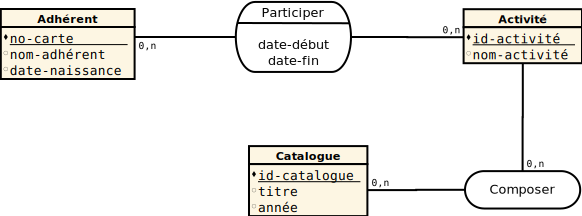
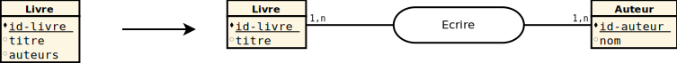
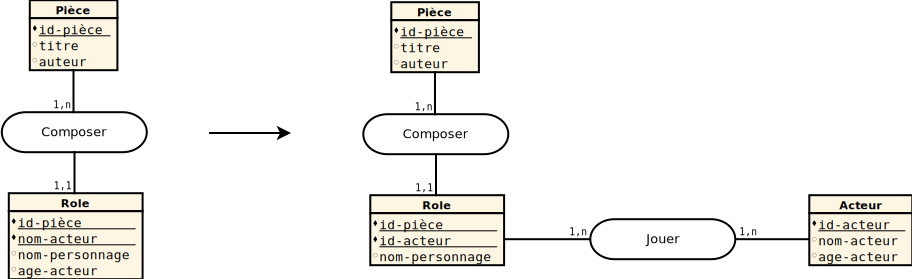
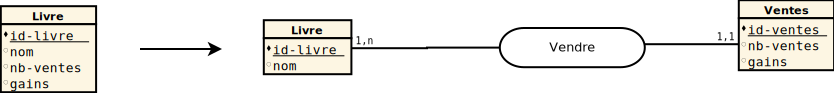
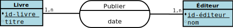
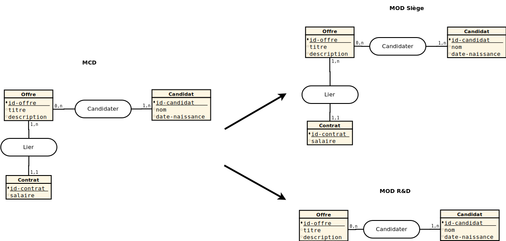

Des problèmes ?
manque de temps, d'homogénéité, de structure, de communication, ...
besoin d'une démarche , de techniques et d'outils
Merise
Méthode d'analyse, de conception et de gestion de projet informatique Wikipedia
- niveaux d'abstraction
- méthodes, outils (formalismes)
- lourdeur
Conseil : Adapter, choisir ce qui est utile
Découplage
- données : structures, relations
- traitements : flux de données internes et externes, manipulation des données
Dimensions
- Cycle de décision (résultats produits par le SI)
- Cycle de vie (conception, mise en oeuvre, évolution d'un SI)
- Cycle d'abstraction (modélisation du SI)
Cycle d'abstraction
- Expression des besoins
- niveau Conceptuel : fondamentaux, stable, indépendant
- niveau Organisationnel : personnes, matériel
- niveau Logique : outils, indépendant
- niveau Physique: outils, technique
Outils
| Besoins | DD1 | DF/MF2 | |
| Conceptuel | MCC3 | ||
| Quoi ? | MCD4 | MCT6 | |
| Organisationnel | Qui ? Où ? | MOD5 | MOT7 |
| Logique | Comment ? | MLD8 | MLT |
| Physique | Comment ? | MPD | MPT |
Recueil des besoins
- But : lister les informations et leurs flux
- Existant : collecter les données existantes (documents, normes, entretiens)
- Analyse : déterminer les entrées, les sorties et les flux de l'un à l'autre
Exercice 2
Recueillir les besoins du SI d'une boulangerie
Exercice 3
Recueillir les besoins du SI d'une start-up souhaitant transformer les possesseurs de machine à pain en boulangerie de voisinage
Dictionnaire de données (DD)
lister les données
- Classifier : données élémentaires, calculées, composées
- Typer : définir les types et les formats des données
- Épurer : supprimer les doublons, spécifier, déterminer les contraintes
DD : exemple
| Mnémonique | Description | Type | Format | Divers | Exemple |
|---|---|---|---|---|---|
| id-produit | identifiant d'un produit | entier | - | séquentiel | 1 |
| nom-produit | nom d'un produit | texte | 50 car. max | - | boite de haricots verts |
| prix-produit | prix du produit | décimal | - | en euros | 1.00 |
| date-péremption | date de péremption | date | jj/mm/yyyy | - | 06/10/2015 |
Exercice 4
Écrire les dictionnaires de données de nos deux petites entreprises
Matrice des flux (MF)
bilans des activités des acteurs
- Définir : (émetteur, récepteur, nature)
- Sélectionner : nécessaires (besoin d'un récepteur)
MF : exemple
| Fournisseur | Gestion des achats | Gestion des stocks | |
|---|---|---|---|
| Fournisseur | - |
|
|
| Gestion des achats |
|
- | |
| Gestion des stocks | - |
|
Exercice 5
Écrire les matrices de flux de nos deux petites entreprises
Diagramme de flux (DF)
Décomposition en domaines d'activité
- Domaine : ensemble d'activités avec une finalité commune (gestion des stocks, vente, ...)
- Acteurs : intervenants du système, émetteur ou récepteur de flux (interne/externe, domaine, ...)
- Décomposition en sous-domaines
DF : formalisme
DF : exemple
DF : exemple
Exercice 6
Écrire les diagrammes de flux de nos deux petites entreprises
Modèle Conceptuel de Communication (MCC)
Description des flux de données
- Message : transmission d'une information complète
- Réalisation : chronologique (assure la cohérence), exhaustive
MCC : exemple
Exercice 7
Écrire les MCC de nos deux petites entreprises
Modèle Conceptuel de Données (MCD)
Décrire les entités et les associations définissant les données
- Propriété : donnée du SI unique
- Entité : ensemble cohérent de propriétés
- Association : lien entre entités
MCD : formalisme
MCD : exemple
MCD : propriété
Donnée élémentaire, atomique et unique
- issue du DD
- liée à une entité
- composée mais pas décomposable
- numéro de sécurité sociale
- adresse ?
MCD : entité
Élément ayant une existence propre et cohérent avec le SI
- définie par un nom
- possède un identifiant unique
- est composée d'au moins une propriété
- participe à au moins une association
MCD : association
Élément perçu mais sans existence propre
- définie par un verbe
- liée à une (réflexive) ou plusieurs entités (binaires ou n-aires)
- porteuse de cardinalités
- occurrence minimale [0, 1] des entités associées
- occurrences maximales [1, n] des entités associées
- peut être composée de propriétés
MCD : construction
MCD : construction
MCD : validation
- Assurer la cohérence du MCD
- éviter les redondances d'information
par respect de l'unicité des propriétés
par normalisation
MCD : normalisation
Respect des 3 premières formes normales
- aucune propriété n'est décomposable ou multiple
- une seule valeur possible
- toute propriété dépend de la totalité de l'identifiant
- toute propriété dépend directement de l'identifiant
- pas de transitivité
MCD : validation
Valeurs multiples
MCD : validation
Dépendance sur une partie de clé
MCD : validation
Dépendance transitive
Exercice 8
Corriger la partie de MCD suivante
Exercice 9
Écrire le MCD de notre boulangerie
Modèle conceptuel de traitement (MCT)
Décrire les processus du SI
- Évènement : apport d'information déclencheur
- Opération : suite non-interruptible d'actions d'une activité
- Résultat : information produite par l'opération
MCT : formalisme
MCT : exemple
MCT : construction
à l'aide du MCC en respectant les règles suivantes :
- une opération produit des résultats exhaustifs
- une opération est une suite ininterrompue d'actions
- une opération ne comporte pas de résultat intermédiaire conditionnel
MCT : construction
Exercice 10
Écrire le MCT de notre boulangerie
Modèle org. de traitement (MOT)
Décrire les procédures du SI
- Définir les postes de travail
- Déterminer l'ordre d'exécution des phases
- Déterminer les types d'automatisation (MA, TR, TD)
MOT : formalisme
MOT : exemple
MOT : construction
à l'aide du MCT
- Plusieurs processus peuvent appartenir à une procédure, mais pas l'inverse
- Les opérations du MCT peuvent être décomposées en une ou plusieurs phases
Exercice 11
Le boulanger ouvre des stands aux stations de métro : écrire les MCC, MCT et MOT du nouveau SI
Modèle org. de données (MOD)
Mettre en évidence la visibilité des données
- Définir l'emplacement les types de sites
- Déterminer la répartition des données par type de site
- Déterminer les droits d'accès aux données
MOD : formalisme
Identique au MCD, mais découplé par site
- ajout d'un tableau de sites
- ajout d'un tableau de droits d'accès
MOD : sites
| Sites | Acteurs |
|---|---|
| Siège |
|
| R&D |
|
MOD : droits d'accès
| Secrétariat RH | Dir. technique | Service RH | ||||||||||
|---|---|---|---|---|---|---|---|---|---|---|---|---|
| Ent.-Rel. | C. | R. | U. | D. | C. | R. | U. | D. | C. | R. | U. | D. |
| Contrat | - | - | - | - | - | - | - | - | X | X | X | X |
| Offre | - | X | - | - | - | X | X | - | X | X | X | X |
MOD : construction
à l'aide du MCD
- Création d'un MOD par site
- Ajout des données organisationnelles
MOD : exemple
Exercice 12
Le boulanger ouvre des stands aux stations de métro : écrire les MCD et MOD du nouveau SI
Exercice 13
Modélisez complètement le SI de la boulangerie et de ses stands| Documents collectés | Décisions |
|---|---|
|
|
Dictionnaire de Données (1/4)
| Mnémonique | Description | Type | Format | Divers | Exemple |
|---|---|---|---|---|---|
| id-bon-livraison | identifiant d'un bon de livraison | entier | - | séquentiel | 1 |
| nom-fournisseur | nom d'un fournisseur | texte | - | - | Farines Inc. |
| code-fournisseur-bon-livraison | identifiant fournisseur d'un bon de livraison | texte | 50 car. | - | 421337-OXO |
| date-livraison | date de livraison | date | - | - | 01/01/2015 |
| code-fournisseur-produit | identifiant fournisseur d'un produit | texte | 50 car. | - | #81d8d0 |
| quantité-livrée | quantité livrée d'un produit | décimal | - | unité selon produit | 12.00 |
| nom-produit | nom d'un produit | texte | 70 car. | - | Farine |
| quantité-produit | quantité d'un produit en stock | décimal | - | unité selon produit | 12.00 |
Dictionnaire de Données (2/4)
| Mnémonique | Description | Type | Format | Divers | Exemple |
|---|---|---|---|---|---|
| id-facture | identifiant d'une facture | entier | - | séquentiel | 1 |
| code-créancier-facture | identifiant fournisseur d'une facture | texte | 50 car. | - | 00000-0000 |
| nom-créancier | nom d'un créancier | texte | - | - | Farines Inc. |
| date-facture | date d'une facture | date | - | - | 01/01/2015 |
| date-paiement-facture | date de paiement d'une facture | date | - | - | 01/09/2015 |
| total-facture | somme totale à payer pour une facture | décimal | - | en euros | 100.0 |
Dictionnaire de Données (3/4)
| Mnémonique | Description | Type | Format | Divers | Exemple |
|---|---|---|---|---|---|
| id-stand | identifiant d'un stand | entier | - | séquentiel | 1 |
| nom-stand | dénomination d'un stand | texte | 70 car. | - | Nanterre-Université |
| quantité-stand | quantité d'un produit disponible dans un stand | décimal | - | unité selon produit | 12.00 |
| id-ticket | identifiant d'un ticket | entier | - | séquentiel | 1 |
| date-émission | date d'émission d'un ticket de caisse | date | jj/mm/aaaa | - | 06/10/2015 |
| code-barre | code barre d'un produit à la vente | texte | 50 car. | unique | 3-454977-344617 |
| prix-vente | prix d'un produit à la vente | décimal | - | en euros | 2.00 |
| quantité-vendue | nombre de produits vendus sur un ticket | décimal | - | penser au demi-baguettes | 0.5 |
Dictionnaire de Données (4/4)
| Mnémonique | Description | Type | Format | Divers | Exemple |
|---|---|---|---|---|---|
| id-contrat | identifiant d'un contrat | entier | - | séquentiel | 1 |
| intitulé | intitulé d'un contrat | texte | 50 car. | - | Vendeur Junior |
| date-début | date de début d'un contrat | date | - | - | 01/01/2015 |
| date-fin | date de fin d'un contrat | date | - | - | 31/12/2015 |
| salaire | salaire d'un employé | décimal | - | en euros | 2000.0 |
| nom-employé | nom d'un employé | texte | 50 car. | - | Robert Dupond |
| date-naissance | date de naissance d'un employé | date | - | - | 31/12/1996 |
| adresse | adresse d'un employé | texte | 70 car. | - | 200, Avenue de la République 92001 NANTERRE CEDEX |
| id-paye | identifiant d'une paye | entier | - | séquentiel | 1 |
| date-paiement-paye | date de paye | date | - | - | 31/01/2015 |
| prime | prime versée à un employé | décimal | - | en euros | 190.0 |
Matrice des Flux
| Fournisseur | Boulanger | Créancier | Client | Stock | Vendeur | Trésorerie | |
|---|---|---|---|---|---|---|---|
| Fournisseur | - | - | - |
|
- | - | |
| Boulanger | - | - | - |
|
- | - | |
| Créancier | - | - | - | - | - | - | |
| Client | - | - | - | - | - | - | |
| Stock | - | - | - | - |
|
|
|
| Vendeur | - | - | - |
|
- |
|
|
| Trésorerie |
|
|
|
- | - |
|
Diagramme des Flux

Diagramme des Flux

Modèle de Conceptuel de Communication : Gestion Stock

Modèle de Conceptuel de Communication : Gestion Stock
- bon de livraison (Fournisseur, Stock)
- nom-fournisseur
- id-bon-livraison
- code-fournisseur-bon-livraison
- code-fournisseur-produit
- nom-produit
- quantité-produit
- code-barre
- facture (Fournisseur, Stock)
- id-facture
- code-créancier-facture
- date-facture
- total-facture
- produits utilisés / fabriqués (Boulanger, Stock)
- quantité-produit-utilisée
- quantité-produit-fabriquée
- produits mis à la vente (Stock, Vendeur)
- code-barre
- quantité-produit-stand
- facture (Stock, Trésorier)
- id-créancier
- code-créancier-facture
- date-facture
- total-facture
Modèle de Conceptuel de Communication : Ventes

Modèle de Conceptuel de Communication : Ventes
- ticket de caisse (Vendeur, Client)
- date-émission
- code-barre
- nom-produit
- prix-vente
- quantité-vendue
- ticket de caisse (Vendeur, Trésorier)
- date-émission
- code-barre
- prix-vente
- quantité-vendue
- contrat (Trésorier, Vendeur)
- intitulé
- nom-employé
- adresse
- date-naissance
- date-début
- date-fin
- salaire
- fiche de paye (Trésorier, Vendeur)
- salaire
- date-paiement
- prime
- produits mis à la vente (Stock, Vendeur)
- quantité-produit-stand
Modèle de Conceptuel de Communication : Trésorerie

Modèle de Conceptuel de Communication : Tésorerie
- contrat (Trésorier, Vendeur/Boulanger)
- intitulé
- nom-employé
- adresse
- date-naissance
- date-début
- date-fin
- salaire
- fiche de paye (Trésorier, Vendeur/Boulanger)
- salaire
- date-paiement
- prime
- ticket de caisse (Vendeur, Trésorier)
- date-émission
- code-barre
- prix-vente
- quantité-vendue
- facture (Stock/Créancier, Trésorerie)
- id-créancier
- code-créancier-facture
- date-facture
- total-facture
Modèle de Conceptuel de Données

Modèle de Conceptuel de Traitements : livraison

Modèle de Conceptuel de Traitements : mise à jour du stock

Modèle de Conceptuel de Traitements : ravitaillement d'un stand

Modèle de Conceptuel de Traitements : vente

Modèle de Conceptuel de Traitements : paiement facture

Modèle de Conceptuel de Traitements : embauche

Modèle de Conceptuel de Traitements : paye

Modèle de Conceptuel de Traitements : bilan

Modèle de Organisationnel de Traitements : livraison

Modèle de Organisationnel de Traitements : ravitaillement du stock

Modèle de Organisationnel de Traitements : ravitaillement d'un stand

Modèle de Organisationnel de Traitements : vente

Modèle de Organisationnel de Traitements : embauche, paye, bilan

Modèle de Organisationnel de Données : sites
| Sites | Acteurs |
|---|---|
| Boulangerie |
|
| Stand |
|
Modèle de Organisationnel de Données : droits d'accès
Boulanger
Trésorerie
Vendeur
Stock
Ent.-Rel.
C. R. U. D.
C. R. U. D.
C. R. U. D.
C. R. U. D.
Contrat
- X - -
X X X X
- X - -
- - - -
Paye
- X - -
X X X X
- X - -
- - - -
Facture
- - - -
X X X X
- - - -
X X X X
Créancier
- - - -
X X X X
- - - -
X X X X
Bon_Livraison
- - - -
- - - -
- - - -
X X X X
Livrer
- - - -
- - - -
- - - -
X X X X
Produit
- - - -
- - - -
- - - -
X X X X
Stand
- - - -
X X X X
- X X -
- X - -
Disposer
- - - -
X X X X
- - - -
- X - -
Ticket_Caisse
- - - -
- X - -
X X X X
- - - -
Vendre
- - - -
- X - -
X X X X
- - - -
Modèle de Organisationnel de Données : boulangerie
Modèle de Organisationnel de Données : stand

Contrôle Continu
[ Sujet 1 ] - [ Sujet 2 ]Résumé de la démarche (1/3)
- Recueil des besoins
- lister les données (DD) : classifier, typer, épurer
- lister les acteurs et les flux (MF/DF) : définir (émetteur, récepteur, nature), décomposer en sous-domaines
- assurer la cohérence DF / MF
Résumé de la démarche (2/3)
- Conception : niveau conceptuel (quoi ?)
- décrire les flux de données (MCC) :
- décomposer les flux du DF en messages
- détailler les messages avec les données du DD et les données calculées
- assurer la cohérence DD / MCC
- définir la statique du système (MCD)
- utiliser les messages du MCC détaillé pour définir les entités et les associations porteuses
- ajouter les associations non porteuses et les cardinalités
- valider les formes normales sur le MCD
- assurer la cohérence DD / propriétés du MCD
- définir la dynamique du système (MCT)
- utiliser les acteurs du MCC pour définir les processus effectués par ceux-ci : événements, actions, résultats
- valider le MCT : résultats exhaustifs, pas d'interruption des actions, pas de résultat intermédiaire des actions
- assurer la présence de tous les messages du MCC dans le MCT
- décrire les flux de données (MCC) :
Résumé de la démarche (3/3)
- Conception : niveau organisationnel (qui ? où ?)
- définir les procédures du système (MOT) : postes de travail, ordre d'exécution et niveaux d'automatisation
- définir la visibilité des données (MOD) : sites, droits d'accès et répartition des données
On a vu tout MERISE ?
NON, il manque la conception technique (MLD, MPD, MLT, MLPT)
NON, il manque de nombreux détails (CIF, héritage, ...)
NON, il manque la gestion globale du projet
Ressources
Slides faits avec Reveal.js
Icones par Creative Stall et Ben Rizzo